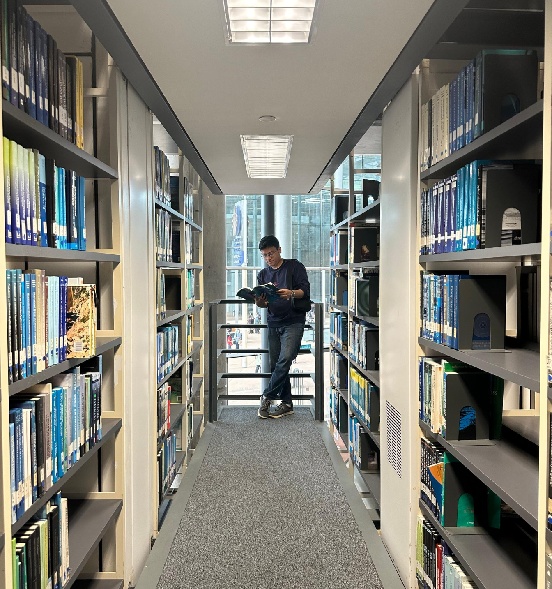
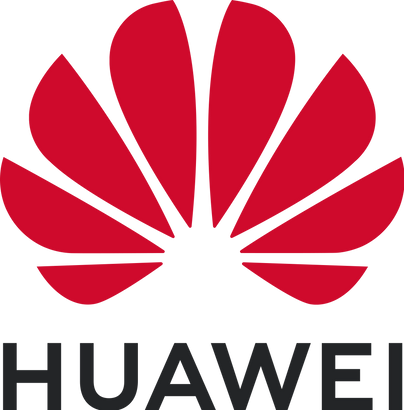
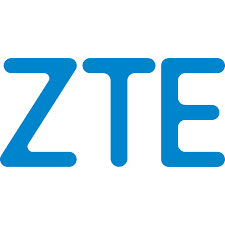
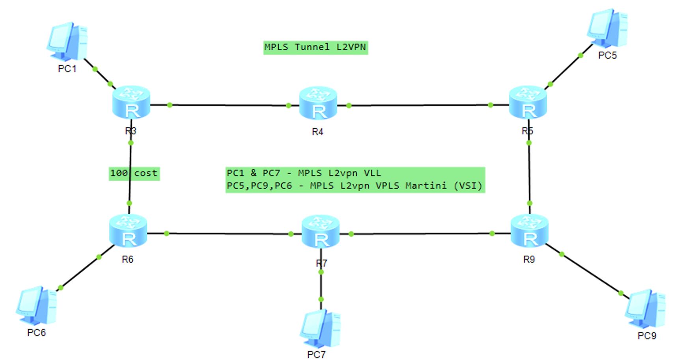
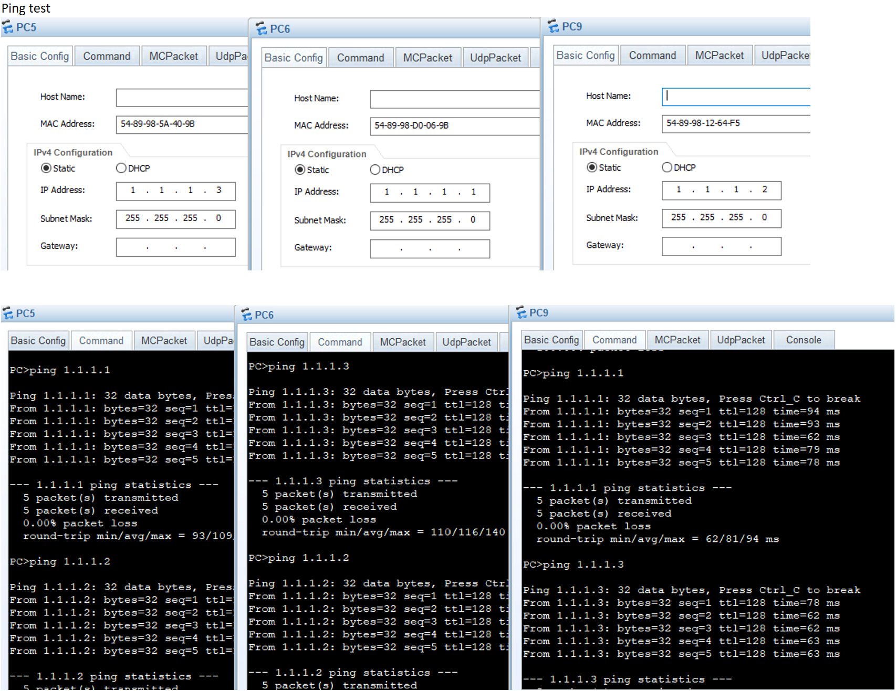
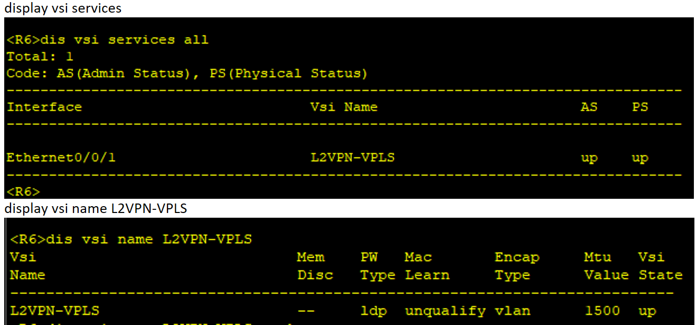
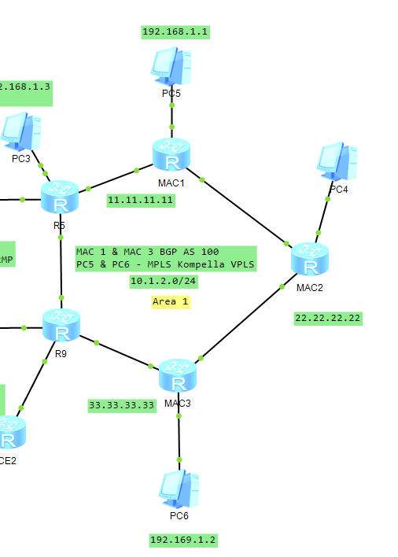
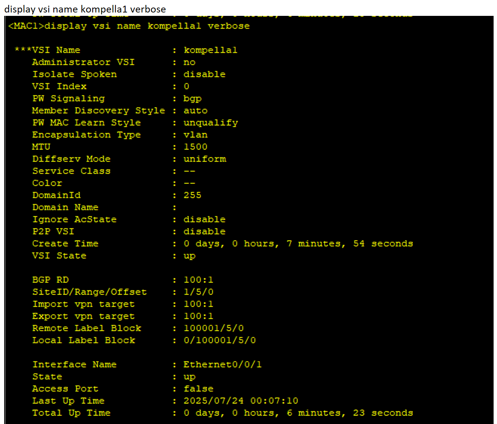
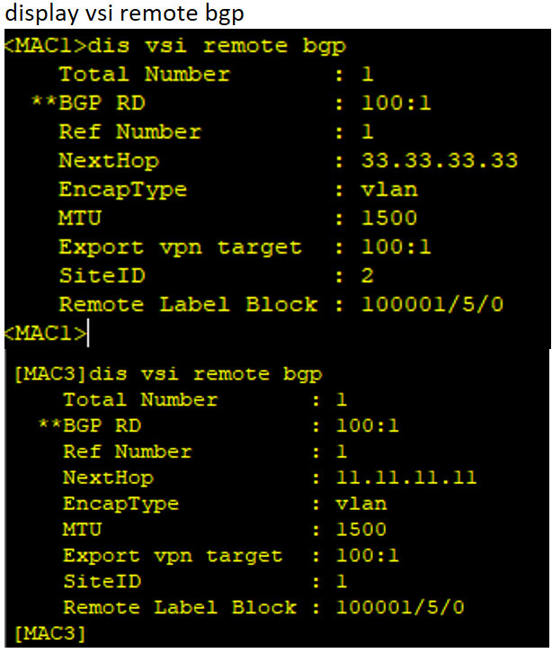
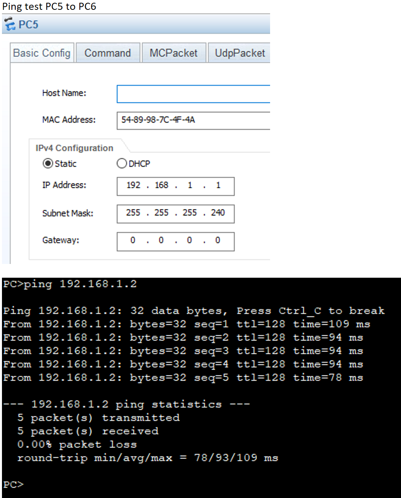

IP Engineering | Datacom | Automation
Specializing in Metro-E and Enterprise IP networks, data communication technologies, and network automation.
About Me
Career Summary
Project & Achievement
Technical Expertise
Simulation Lab

About Me
"Hi everyone, I'm Muhammad Azizul — a Datacom Engineer dedicated in solving network challenges through automation, scripting, and smart infrastructure design.
Always ready to push my limit and find better ways to work!"
Certificates
First-Class Honors Degree - Bachelor of Electrical Engineering
Universiti Teknologi Malaysia

HCIA - Routing & Switching
Huawei
Career Summary

TNB - INTERNSHIP
JUN 2019 – AUG 2019
- Joined 3 different technical department which are Fault Finder, SAVR (Sesalur Atas Voltan Rendah) and substation.
- Carried out technical tasks for each department.
HUAWEI - NETWORK ENGINEER
OCT 2020 – OCT 2022
- TM Stellar Delivery Project - commissioning Huawei switches and servers for TM Alpha cloud expansion.
- TM NMS Modernization - migrating thousand of FTTH and MSAN devices from old NMS U2000 to new NMS NCE, leading the team in technical aspect and communication with customer.
- Digi iBeam IPRAN - responsible in topo reengineering, link upgrade, service migration and new Huawei router integration.
TIME - IP PROVISIONING ENGINEER
OCT 2022 – AUG 2025
- Responsible in provisioning TIME Metro E Enterprise services (Internet Direct, Lease Line, IPVPN, VoIP & IP Transit)
- Carry out TIME MPLS Metro-E troubleshooting and deep dive inside customer requirement regarding service integration.

ZTE - IP ENGINEER
AUG 2025 – PRESENT
- TM NGT Migration Project – responsible for migrating TM legacy Metro-E services (NPE & EPE) to new ZTE AGG devices under the Next Generation Transport (NGT) network.
- Performed end-to-end service migration for Enterprise, Wholesale and Mobile services including Internet Direct, IPVPN (MPLS L3VPN), IP Transit, VoIP, High-Speed Internet (HSI), FTTH broadband, IPTV, Multicast VPN (MVPN), as well as mobile backhaul and voice-over-broadband services (VOBB, NGBH)
Key Projects & Achievements
TM Stellar Delivery Project
- Managed to commission Huawei switches and servers for TM Alpha cloud expansion
- Managed to provide project LLD and materials
- Performed Hardware Acceptance Test (HAT) on installed devices.
Server
Huawei
Cloud
TM NMS Modernization
- Migrated thousands of network devices from U2000 to new NMS NCE
- Managed to integrate customer OSS with NCE
- Obtained TM Appreciation letter from TM General Manager
NMS
System Monitoring
OSS
Digi iBeam IPRAN
- Fully applied IP knowledge: OSPF, BGP, MPLS, L2VPN and L3VPN.
- Implemented Digi IPRAN topology reengineering and link upgrade.
- Managed to complete many migration without causing network interruption.
Datacom
Router
IPRAN
TIME Metro-E Enterprise Project
- Delivered large-scale Enterprise IPVPN (MPLS L3VPN) deployments for MBSB across 100+ customer sites
- Completed PLUS MMOC modernization project with 200+ sites, including topology changes and service cutover
- Migrated critical enterprise Bank Negara Malaysia (BNM) IPVPN services from legacy infrastructure to new Metro-E network
- Performed numerous enterprise service provisioning, testing, and live migration support with minimal customer impact
Enterprise
Metro-E
IP core
TM Next Generation Transport (NGT) Migration
- Migrating legacy Metro-E services (EPE / NPE) to ZTE NGT aggregation network
- Delivering end-to-end service migration for Enterprise, Wholesale and Mobile services
- Performing pre-migration analysis, data mapping and post-migration verification
- Acted as technical PIC during migration windows, handling troubleshooting and recovery
- Executing migrations with minimal service impact under strict change windows
Service
Migration
Transport
Network Operations Automation
- Developed Python-based automation tools for network inventory extraction and service consistency checks
- Automated pre-check and post-check workflows for large-scale MPLS / Metro-E migrations
- Improved migration success rate by reducing manual intervention and accelerating verification cycles
- Supported operations teams with custom tooling during high-risk maintenance windows
- Reduced manual operation tasks by 50% through automated solution
Python
VBA
Automation
Self IT Project
- Provision Home Network with secure remote access
- Implemented Wake On LAN (WOL) on remote server
- Self-Hosted remote storage and Backup solution
Home Network
WOL
OpenVPN
Technical Expertise
Network Infrastructure
- Routing & Switching (Enterprise & Service Provider)
- MPLS Layer 2 VPN (VLL, VPLS, VSI, EVPN)
- MPLS Layer 3 VPN (IPVPN, VRF-based services)
- BGP (eBGP/iBGP, Full Route & Default Route)
- IP Transit & Internet Edge Architecture
- Metro-E & Access Network Integration (NID, UPE, OLT, MSAN)
- Network Redundancy & High Availability (LAG, Dual-homing, Primary/Secondary paths)
- MTU, QoS & Traffic Engineering in MPLS / Segment Routing (SR-MPLS) networks
Automation & Scripting
- Python (network automation, data validation, service checks)
- Excel Automation (VBA, complex formulas for migration analysis)
- Bash Scripting (operational & support tasks)
- PowerShell (tooling & system automation)
- Network Data Processing (service extraction, comparison & verification)
- Automation for Migration Readiness, Post-Migration Validation & Audit
Security
- IPsec (Site-to-Site & Transport concepts)
- OpenVPN (Remote access & secure tunnels)
- Access Control (ACLs, traffic filtering)
- Encryption Fundamentals (data-in-transit protection)
- Network Segmentation & VRF-based isolation
Network Simulation Lab
Explore my hands-on experience on various datacom topic through practical lab configurations and verifications.
VPLS Martini - L2VPN
Topology

Highlighted Configuration
#
vsi L2VPN-VPLS
pwsignal ldp
vsi-id 1
peer 5.5.5.5
peer 9.9.9.9
#Verification


VPLS Kompella - L2VPN
Topology

Highlighted Configuration
MAC1
#
bgp 100
peer 33.33.33.33 as-number 100
peer 33.33.33.33 connect-interface LoopBack0
#
ipv4-family unicast
undo synchronization
peer 33.33.33.33 enable
#
vpls-family
policy vpn-target
peer 33.33.33.33 enable
#
#
vsi kompella1
pwsignal bgp
route-distinguisher 100:1
vpn-target 100:1 import-extcommunity
vpn-target 100:1 export-extcommunity
site 1 range 5 default-offset 0
#Verification



Work in progress...
Let's Connect
Have any questions, queries, or something to share? Feel free to reach out using the contact details below.